Projects
Libraries
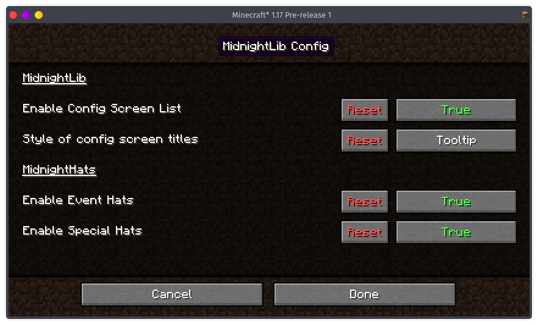MidnightLib is a common library for use in our own and third-party projects. It provides a config library with automatic modmenu integration and an alternative menu when modmenu isn't installed!
Mods
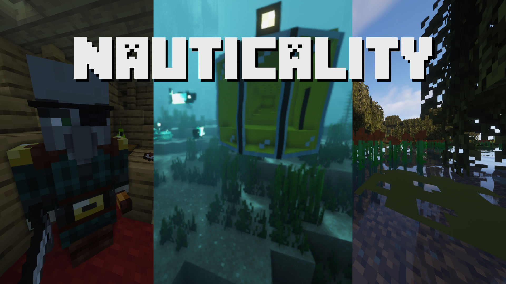Nauticality is a mod focused on making Minecraft's oceans more interesting, by adding pirates (along with pirate ships), submarines, glow fish, and much more!
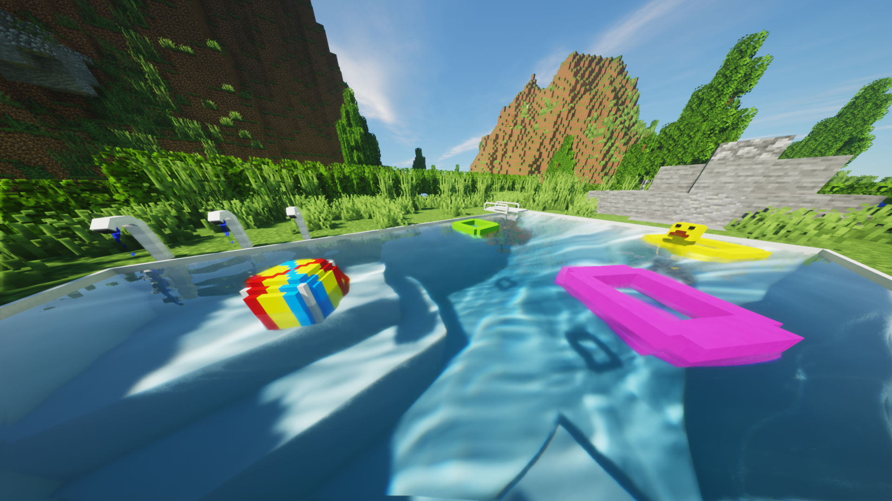Decorative adds mostly modern decorative objects such as Lamps, Televisions, Sliding Doors and many more!
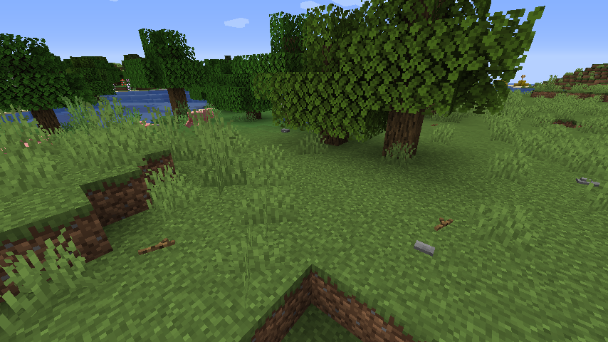This Rocks! focuses on making your world feel more alive, by adding sticks, stones, sea shells, pine cones, starfish and geysers that generate naturally.
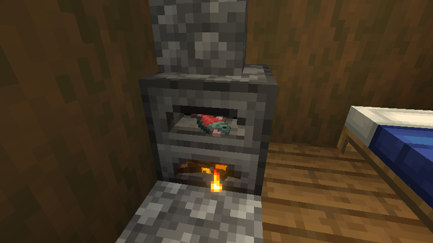Visual Overhaul aims to level up the aesthetics of certain blocks and show the items in their inventories.
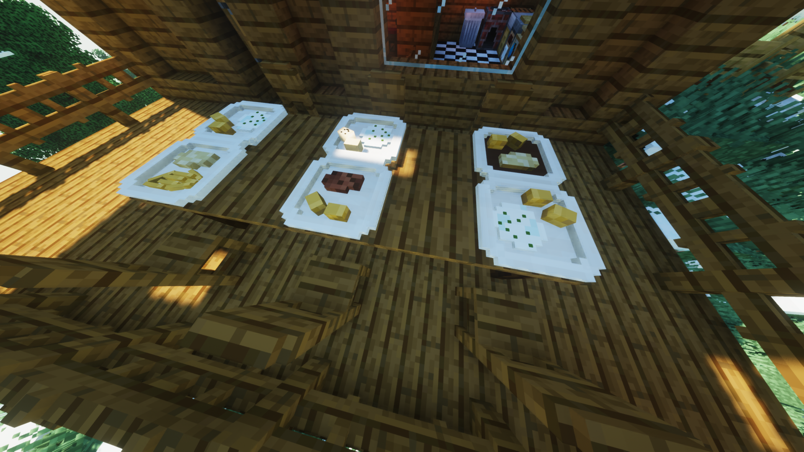Delicious Dishes adds various 3D-modeled dishes to Minecraft. Cook steak, craft pizza or even buy ice cream from the Ice Cream Trader.
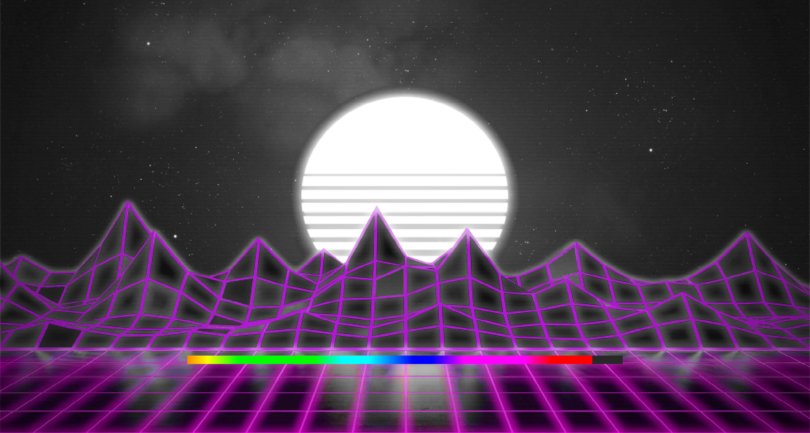Custom Splash Screen allows users and modpack-creators to change Minecraft's loading screen to their liking.
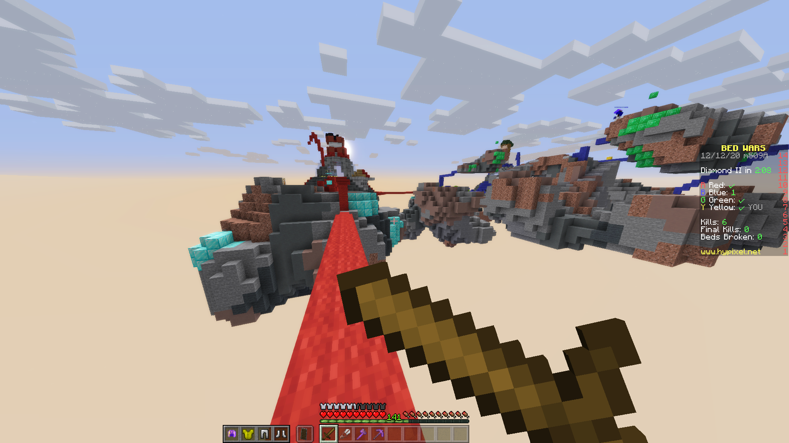Sword Blocking restores the pre-1.9 blocking mechanic known as sword blocking.
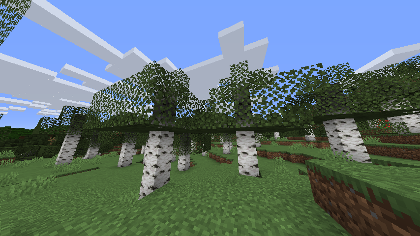Cull Leaves uses occlusion culling to make rendering leaves more performant.
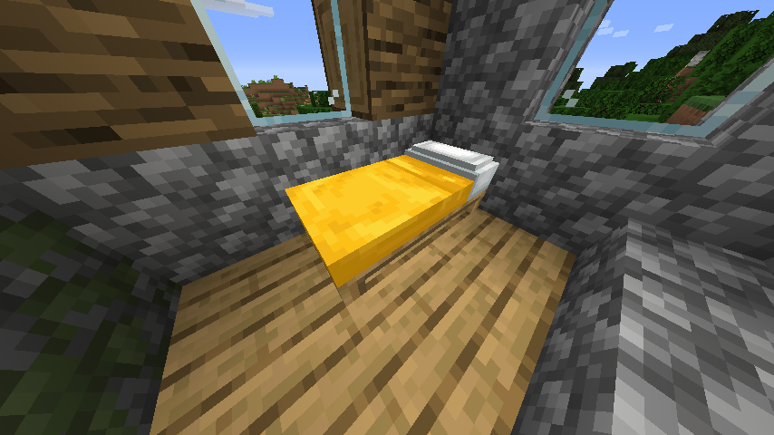Better Beds changes the renderer of the bed to use json models instead of a block entity renderer, resulting in improved performance and custom models being possible
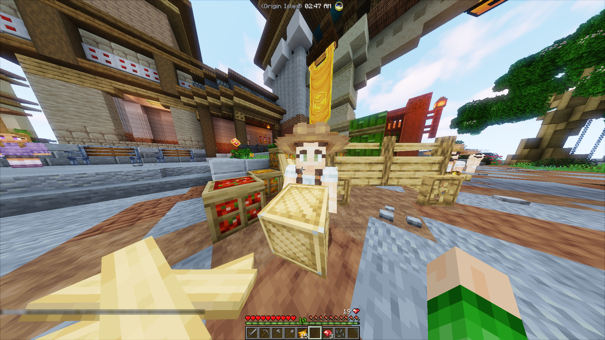Time Changer allows configuring a client-side time with a server white- or blacklist.
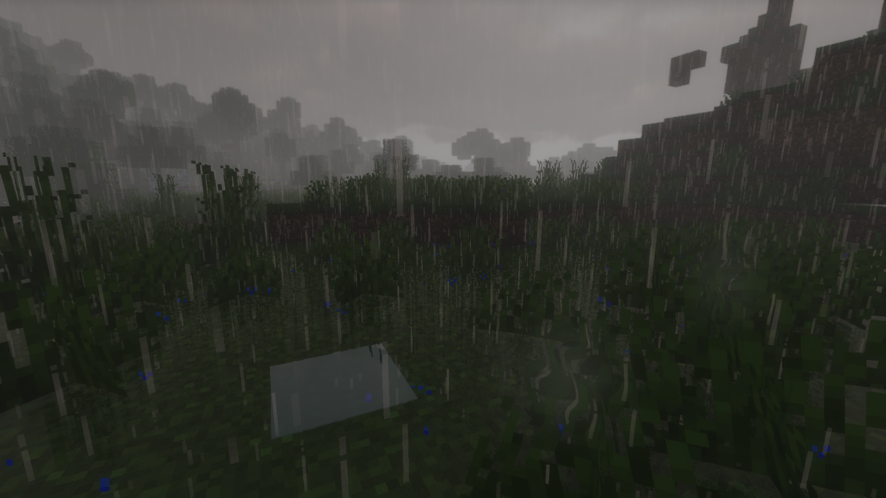Motschen's Puddles adds puddles that spawn during rainy weather.

Blinking Skin Port automatically toggles certain parts of the user's second skin layer, making it appear animated.
Resourcepacks
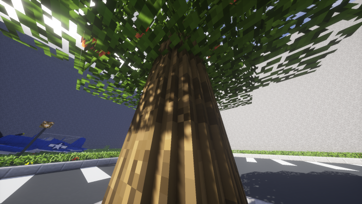Round Trees tries to add a little more realism to the game by making tree logs appear rounded.
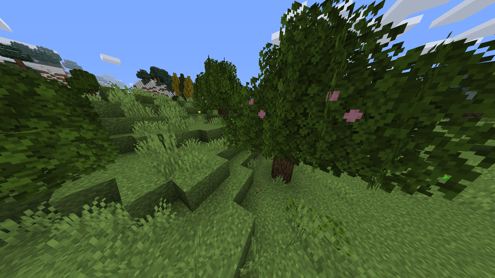Better Leaves makes Minecraft's leaves look more appealing by adding bushy layers that even adjust to texturepacks!
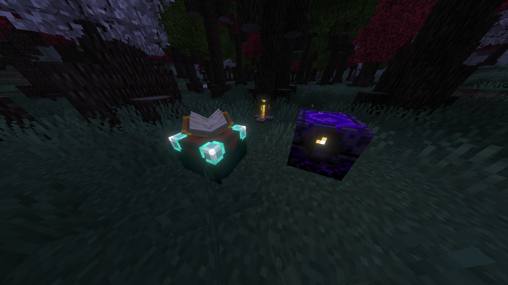More Canvas Compat provides additional resources to be used by the canvas renderer, adding compatibility for certain mods and enhancing vanilla content.